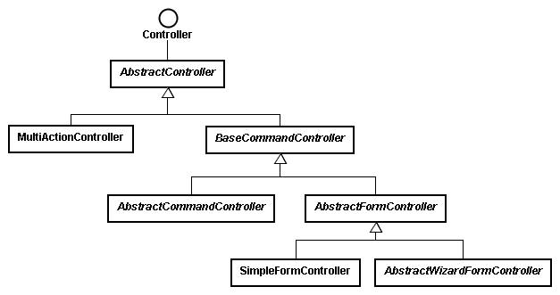

當 使用者送出請求之後，實際上處理請求的是Controller，您可以實作Controller介面來完成請求處理的邏輯，在Spring中， Controller是受Spring IoC容器管理的一個 Bean實例，另一方面，Spring提供了一個豐富的Controller繼承架構，讓您可以根據實際上的需求來繼承某個類別，以完成所需的 Controller處理。
以下列出Spring中Controller的繼承架構：

以下分別簡介Controller相關類別之作用：
- AbstractController
AbstractController實作了
Controller介面，並繼承了
WebContentGenerator，提供了Session快取與同步化（synchronized）的處理，您可以直接繼承
AbstractController，並重新定義它的handleRequestInternal()方法來實作請求的處理，例如：
public class SomeController extends AbstractController {
public ModelAndView handleRequestInternal(
HttpServletRequest request,
HttpServletResponse response) throws Exception {
....
return new ModelAndView("view", "modelName", model);
}
..
}
public ModelAndView handleRequestInternal(
HttpServletRequest request,
HttpServletResponse response) throws Exception {
....
return new ModelAndView("view", "modelName", model);
}
..
}
- MultiActionController
如果為每一個請求撰寫一個Controller類別，在程
式規模增大時，您的Controller類別將會迅速增加，可以繼承或直接使用MultiActionController類別，將數個相關的請求處理集
中於同一個物件中加以管理，而不用每一個請求撰寫一個控制物件。
- BaseCommandController、AbstractCommandController
如果您需要將使用者的請求中所提供的參數值擷取至一個
Command物件中加以管理，則可以使用BaseCommandController類別的子類別，在Spring中，Command是一個純綷的
JavaBean（Plain Ordinary Java Object, POJO）， BaseCommandController
負責將請求參數擷取出來並設定至Command物件中，AbstractCommandController則定義了後續的一些處理流程，通常您會繼承
AbstractCommandController來定義一個CommandController，一個例子如下：
public class SomeCommandController
extends AbstractCommandController {
public SomeCommandController() {
setCommandClass(YourCommand.class);
}
public ModelAndView handle(HttpServletRequest request,
HttpServletResponse response,
Object command,
BindException exception) throws Exception {
YourCommand your = (YourCommand) command;
...
return new ModelAndView(..);
}
..
}
extends AbstractCommandController {
public SomeCommandController() {
setCommandClass(YourCommand.class);
}
public ModelAndView handle(HttpServletRequest request,
HttpServletResponse response,
Object command,
BindException exception) throws Exception {
YourCommand your = (YourCommand) command;
...
return new ModelAndView(..);
}
..
}
- AbstractFormController
對於表單處理，AbstractFormController中定義了一系列處理請求中參數，及表單提交成功或失敗時所要進行的頁面流程。
- SimpleFormController
對於簡單的表單處理，您可以繼承的是SimpleFormController類別，您可以重新定義它的doSubmitAction()方法，如果要自己處理ModelAndView，則可以重新定義它的onSubmit()方法。
- AbstractWizardFormController
對於需要由數個表單畫面來完成一系列資料收集的網頁來說，可以繼承AbstractWizardFormController，您可以像桌面應用程式上使用精靈（Wizard）功能的方式來製作表單。